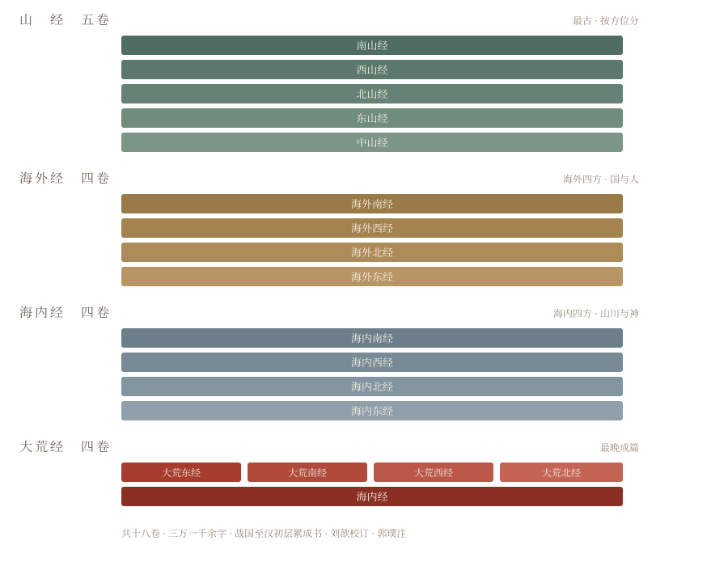
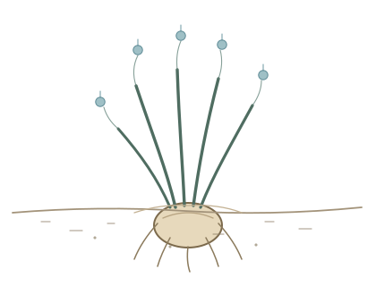
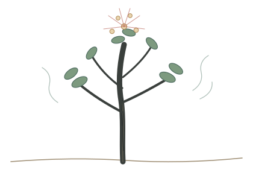
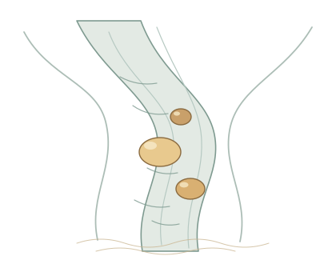
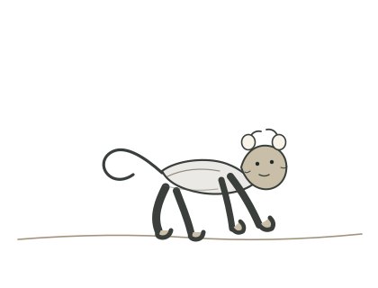
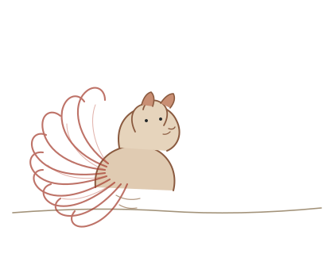
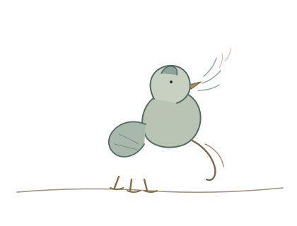
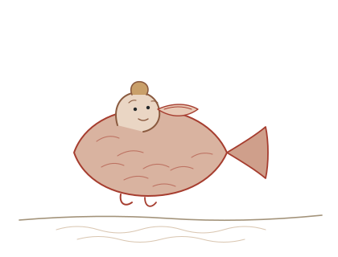

00
导论 · INTRODUCTION
一张三千年前的地图，该怎么读
在走进第一座山之前，先说清楚这本书长什么样、历来怎么读、我们打算怎么读。
约 12 分钟十八卷 · 三万一千字第一季
本讲要点
- 《山海经》十八卷，不是一次写成，也不是一个人写的
- 历来三种读法：找地理、看神话、查物产
- 本课换一种读法：先把它当账本读
- 账本三问：谁记的、记给谁、为什么偏偏记这一笔
一这本书长什么样
《山海经》十八卷，三万余字。听起来不多，但它是中国最早的一部“不写人”的书——不写帝王将相，不写朝代兴衰，写的是山、水、草木、鸟兽、玉石，以及这些东西和人的关系。
十八卷分成四组：
山经五卷：南山经、西山经、北山经、东山经、中山经。按方位分，是全书最古的部分。
海外经四卷：海外南、西、北、东。写“海外”的国与人。
海内经四卷：海内南、西、北、东。写“海内”的山川与神。
大荒经四卷，加上末卷《海内经》：大荒东、南、西、北。是全书最晚成篇的部分。
它不是一个人写的，也不是一个时代写的。从战国到汉初，一层一层加上去。今天我们看到的样子，是西汉刘向、刘歆父子校订，东晋郭璞作注之后定下来的。
这一点很重要：你读到的不是一份原始档案，是一份被整理过很多次的档案。整理的人有他的次序，有他的取舍，也有他那个时代对“什么值得记”的看法。

十八卷的骨架 · 山经最古，大荒最晚
二历来三种读法
第一种，把它当地理书。找昆仑，找黑水，找不周山，找招摇之山在今天哪个县。找了两千年，越找越对不上。不是古人写错了，是这本书本来就不是按经纬度写的。
第二种，把它当神话集。夸父逐日、精卫填海、刑天舞干戚，都从这里来。故事好看，但故事只是书里很小的一部分。全书三万字，真正称得上“神话”的段落，加起来不到十分之一。
第三种，把它当博物志或巫术书。草木鸟兽，哪些能吃，哪些能佩，哪些见了就有灾。这一派最接近原书的语气，但常常止步于“奇物”二字，看完只记得一堆怪名字。
三种读法各有道理，也各有各的执着：第一种执着于坐标，第二种执着于故事，第三种执着于奇。
执着本身不是错。错的是，执着久了，就忘了问一句：写这本书的人，当时在干什么？
三我们换一种读法
先不急着问“这是真的吗”，先问三个更小的问题：
谁记的？ 记给谁看？ 为什么偏偏记这一笔？
然后注意三样东西。
动词。全书反复出现几个字：食、佩、服、见、可以已、可以为。这些字后面跟着的，往往是全篇最实在的信息。“食之不饥”“佩之不迷”“食之善走”——不是形容，是用法。
物产。“多桂”“多金玉”“多水”“多竹”。这些“多”字不是修辞，是清单。清单的意思是：这里有，可以来拿。
方位。“又东三百里”“又南三百里”。方向、距离、水源、出口。这不是坐在屋里想出来的，是走出来的。
把这三样放在一起，这本书的样子会变。它不像一部神话，更像一本账。
一本什么账？记的是：走到一座山，有什么能用，有什么要躲，要拿什么去换平安。
账本不抒情，也不解释。它只记。正因为只记，它比后来所有转述都可靠。
四读的时候，请暂时忘掉三件事
忘掉后世给这些名字添加的故事。九尾狐在后来的书里是祥瑞，是妖姬，是祸水。但在第一手的记录里，它首先是一种动物。先看它原来是什么，再看它后来被说成什么，顺序不能反。
忘掉字典里那些太整齐的解释。“佩”在今天是一个文雅的字，玉佩、佩服、钦佩。但在没有衣带的年代，“佩”要先解决一个物理问题：怎么把一块石头固定在身上。
忘掉“古人很神秘”这个印象。古人首先要吃饭，要走路，要躲雨，要治肚子疼。他们记下来的，多半是这些事。神秘是我们后来加上去的。
如果这本书是一本账本，那么记账的人，最怕什么？
不用急着回答。等走完南山经的十座山，再回头看这个问题。
01
南山经 · NAN SHAN JING
南方三列山系：草木、金玉与鸟兽
全书的第一卷，第一座山，第一句写的是草木，不是神。我们就从这里开始。
约 18 分钟十座山 · 二千九百五十里第一季
本讲要点
- 南山经分三列山系，开篇十山为第一列
- 全书第一批“食之”“佩之”的记录，都在这十座山里
- 一卷之内有三种写法：清单、未知、支出
- 先看原文写了什么，再看后人添了什么
南山经之首曰䧿山。其首曰招摇之山，临于西海之上，多桂，多金玉。有草焉，其状如韭而青华，其名曰祝余，食之不饥。有木焉，其状如榖而黑理，其华四照，其名曰迷榖，佩之不迷。有兽焉，其状如禺而白耳，伏行人走，其名曰狌狌，食之善走。丽麂之水出焉，而西流注于海，其中多育沛，佩之无瘕疾。
《山海经·南山经》
一招摇之山：第一句为什么写草木
“临于西海之上。”一座山，站在海边。
“多桂，多金玉。”两种物产：香的，硬的。
然后才是三样东西：草、木、兽，外加一条水。
顺序值得注意：先桂，后金玉，再草，再木，再兽，最后水。这不是随手写的。桂是乔木，金玉是矿物，草在脚下，木在身边，兽在远处，水在最后——这是一双眼睛从远到近、从大到小扫过去的顺序。
写书的人先看见山，再看见树，再低头看见草，最后才蹲下去看水里的石头。
祝余
有草焉，其状如韭而青华，其名曰祝余，食之不饥。

祝余 · 其状如韭而青华，食之不饥
“如韭”，叶子像韭菜，细长，丛生。“青华”，开青色的花。
这十一个字里，没有一个字提到它的根。但“食之不饥”四个字，把答案指到了地下。
韭菜的叶子嚼不出饱。能让人不饿的，是埋在土里的那一截。
后世的本草书里，祝余常被比作野芋、山药一类的东西。这类植物的地下块茎富含淀粉，是荒野里最直接的热量。生吃会麻口，喉咙发刺，得用灰煨、用火烤，等它软了再吃。
一条记录，八个字：“其状如韭而青华，食之不饥。”写的人没有说它长在土里多深，没有说怎么去麻，只说了一句“吃了不饿”。因为他知道，看见这句话的人，自己会去挖。
迷榖
有木焉，其状如榖而黑理，其华四照，其名曰迷榖，佩之不迷。

迷榖 · 其状如榖而黑理，其华四照，佩之不迷
“榖”是构树，树皮可以剥下来做布。“黑理”，木纹是黑的。“其华四照”，花开得四面都亮。
一种树，叶子揉碎了有强烈的气味。这种气味在湿热的地方有多重要，走过南方林子的人都知道：蚊虫不近，头脑清醒。
“佩之不迷”。迷，可以是迷路，也可以是心神迷乱。这两个意思，在荒野里其实是一件事：方向感一失，人就完了。
后世把“迷榖”写成“迷谷”，说它生长在招摇之山，佩戴它的花就不会迷路。再往后，它进了小说，成了君子国里的道具。名字越传越雅，原本那股冲鼻子的气味，反倒没人提了。
育沛
丽麂之水出焉，而西流注于海，其中多育沛，佩之无瘕疾。

育沛 · 丽麂之水西流注于海，其中多育沛
水从山上下来，往西流入海。水底有东西。
“育沛”是什么，历来没有定论。有人说是琥珀，有人说是玛瑙，有人说是江里的珠贝。共同点是：水冲出来的、圆的、硬的、好看的石头。
“瘕”，肚子里有结块，按下去会动。寄生虫、疟疾、肠梗阻，都可能。
一块石头当然治不了这些。但一块被水磨圆的石头，贴在皮肤上，是温的；压在手腕上，是沉的。它一直在那儿。你能摸到它。
更要紧的是“佩”这个动作。那个时代没有腰带，没有荷包，没有丝线。你身上可能只有一块兽皮，或者什么都没有。要让一块石头“佩”在身上，只能是：用骨针钻孔，穿一根筋；用树皮纤维绑在手腕上；或者，用烧热的石片在皮肤上烫一个疤，把石头嵌进去。
狌狌
有兽焉，其状如禺而白耳，伏行人走，其名曰狌狌，食之善走。

狌狌 · 其状如禺而白耳，伏行人走，食之善走
像猴子，白耳朵。能伏着走，也能站起来跑。
“食之善走”。吃了它的肉，就能跑。
这是全书第一批“吃什么补什么”的记录。听起来像巫术，其实是最朴素的观察：一种能在林子里跑得飞快的动物，它的肉，也许能把那种力气传过来。
换个角度：在那个时代，能跑，意味着能追上猎物，也意味着能逃开猛兽。善走，是活命。
二堂庭之山：一段只有“多”的清单
又东三百里，曰堂庭之山，多棪木，多白猿，多水玉，多黄金。
四样东西，四个“多”。
没有动词，没有故事，没有“食之”“佩之”。
这是账本的另一种写法：只记有什么，不记怎么用。
棪木，一种果子可以吃的树。白猿，白色的猿。水玉，水晶。黄金，金子。
这一段读起来最枯燥，但它最诚实：不是每座山都有故事。有些山，就是一堆物产。
三即翼之山：一山怪物，一个名字也没有
又东三百八十里，曰即翼之山，其中多怪兽，多怪鱼，多白玉，多蝮虫，多怪蛇，多怪木，不可以上。
六个“多”，六个“怪”。
怪兽、怪鱼、怪蛇、怪木——全是“怪”，没有一个具体的名字。
“不可以上”。上不去。
这是全书第一次出现“去不了”的记录。写的人走到这里，停下了。他能看见山，能看见水里的东西在动，但他叫不出名字，也上不去。
于是他就写：怪。
这一段是账本的第三种写法：未知项。承认自己不知道，也是一种记录。
四青丘之山：九尾狐、灌灌、赤鱬
又东三百里，曰青丘之山，其阳多玉，其阴多青䨼。有兽焉，其状如狐而九尾，其音如婴儿，能食人，食者不蛊。有鸟焉，其状如鸠，其音若呵，名曰灌灌，佩之不惑。英水出焉，南流注于即翼之泽。其中多赤鱬，其状如鱼而人面，其音如鸳鸯，食之不疥。
九尾狐

九尾狐 · 其状如狐而九尾，其音如婴儿
“其状如狐而九尾。”九条尾巴。
“其音如婴儿。”叫声像婴儿。
“能食人。”会吃人。
“食者不蛊。”吃了它的人，不会被蛊毒所害。
四句话，四个信息：样子、声音、危险、用途。
后世的九尾狐，是祥瑞，是妖姬，是祸水。但在这一行字里，它只是一种会吃人的、叫声像婴儿的、可以吃的动物。
“蛊”，一般指蛊毒，也可以指腹中的寄生虫。吃了它就不中蛊——这句话和“食之不饥”“食之不疥”是同一个句式。
同一种动物，在同一个句子里，既是威胁，又是药。这在《山海经》里很常见：危险和用途，从来不分开写。
灌灌

灌灌 · 其状如鸠，其音若呵，佩之不惑
像斑鸠，叫声像人在呵气。
“佩之不惑”。把它带在身上，不迷惑。
“惑”和“迷”是近义词。前面迷榖“佩之不迷”，这里灌灌“佩之不惑”。同一卷里，两次出现“佩了就不会迷失”的记录。
在一个没有路标的世界里，神志清醒是一件需要外物帮忙的事。这句话，写的人没有说，但两处重复已经说完了。
赤鱬

赤鱬 · 其状如鱼而人面，其音如鸳鸯，食之不疥
鱼的身子，人的脸。叫声像鸳鸯。
“食之不疥”。疥，皮肤病，也可能是疥疮。
一条人面鱼，吃了不长疥疮。听起来荒诞。但鱼油、鱼皮、鱼肉，在缺少脂肪的饮食里，确实能治一些皮肤问题。
“人面”两个字，是全书里第一次出现“半人半兽”的写法。后面还有的是。先记住这一条：它出现在一条可以吃的鱼身上。
五箕尾之山：一笔支出
又东三百五十里，曰箕尾之山，其尾踆于东海，多沙石。汸水出焉，而南流注于淯，其中多白玉。
凡䧿山之首，自招摇之山以至箕尾之山，凡十山，二千九百五十里。其神状皆鸟身而龙首。其祠之礼：毛用一璋玉瘗，糈用稌米，一璧，稻米，白菅为席。
《山海经·南山经》
十座山，二千九百五十里。这是第一列山系的账。
然后是神：鸟的身子，龙的头。
然后是祭祀：毛（牲畜）用一块璋玉一起埋下去，糈（祭神用的精米）用稻米，一块璧，白茅草编的席子。
玉、米、席。三样东西。
账本记到这里，第一次出现了“支出”。
前面记的是收入：什么能吃，什么能佩，什么能换。这里记的是付出：为了平安走下一段路，要拿出什么。
十座山走完，要把玉埋进土里，把米撒出去，把席子铺好。然后继续往东。
六这一卷的账
| 类别 | 条目 | 原文 |
|---|
| 食物 | 祝余、狌狌、九尾狐、赤鱬 | 食之不饥 / 善走 / 不蛊 / 不疥 |
| 随身 | 迷榖、育沛、灌灌 | 佩之不迷 / 无瘕疾 / 不惑 |
| 危险 | 蝮虫、怪蛇、九尾狐 | 能食人 / 不可以上 |
| 支出 | 璋玉、稌米、璧、白菅 | 祠之礼 |
十座山，二千九百五十里，记下来的是这些。
没有一处提到神仙的住处，没有一处提到不死药，没有一处提到谁赢了谁。
只有：走下去，吃什么，带什么，躲什么，拿什么去换。
第一卷记了十座山。哪一座，你觉得住着最舒服？哪一座，你最不想去？
先别查资料，就凭这一卷里写的东西，说说为什么。